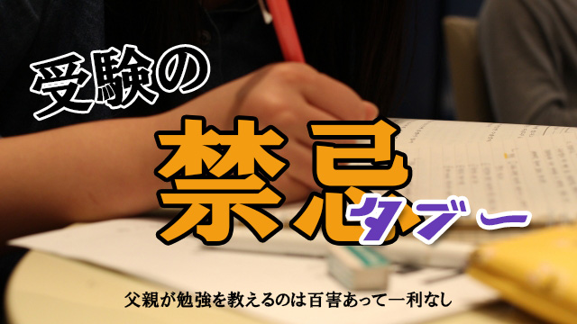

前回まで少し重苦しい話が続いたので、今回はちょっと軽めの話題を。
「子どもの勉強に親、特に父親が口を出す」ことの是非について。
実は今月の月イチお話会のテーマ「受験生をもつ親の心がまえ」に向けて準備していたところ、現場のベテラン講師から「これだけは伝えて欲しい」と言われたことがあるのです。
それは「最近の現象として、お父さんが子どもの勉強をみる傾向があるがこれはやめて欲しい。まず効果が上がらないし、それどころか逆効果でしかないから…」というものです。
以下ベテラン講師たちの訴えをまとめるとこうなります。
自分の仕事をそっちのけに、会社も定時に退出し帰宅。「今日からオレが数学を特訓する！」と意気込む。
子どもは、たいていそんな意気込むお父さんの解説をただ聞いているだけの一方通行的勉強。当然成績は伸びず、すると父はまた意気込むという「負のスパイラル」に陥る。この状況になると、子どもは塾でも萎縮するようになり勉強に対して自力で打開しようとする気力も薄れてしまう。
こんなお父さん、確かに増えている気がします。高学歴でなぜか理数系を得意とする人に多い。
お父さんの気持ちも分からないではありません。
それまで仕事も忙しく、あまり子どもに関わって来なかった負い目もあるのでしょう。
また、奥さんから「ウチの子も受験生！親としてもガンバる時よ。あなたも私ばかりに任せてないで少しは面倒みてよ。」と言われているのかも知れません。
父親が子どもの面倒を見るとしたら何ができるか？
お父さんは考えます。そして「そうだ！オレは昔から数学が得意だった。よし、数学を教えてやろう！」
こうして高学歴で数学が得意のお父さんは、我が子の面倒を見るべく、受験合格を目指して張り切って数学を教えるわけです。
こうしたパターンでお父さんが介入する限り
絶対うまく行きません！
失敗は目に見えています…
理由は簡単。
そもそも肉親同士は「勉強を教える―学ぶ」関係に適していないからです。お互い感情的になりやすく、冷静に教え学ぶ関係が成り立たない。
特に「高学歴で学生時代勉強ができた」と自負している親は、どうしても上から目線で
「こんなことも分からないのか」とタブーな言葉を使ってしまいます。
要するに叱りつけながら教えるわけで、子どもは反発するか困惑するか、いずれにせよ頭に入ってきません。
例えて言うなら、外科医が自分の家族の手術はできないし、教師が我が子の担任をできないのと同じことです。
ちなみに私も我が子の勉強を見ることができません。受験指導のプロである私にもムリです。
いや、正確に言うと妻に催促されプリントをやらせてチェックしたことがあります。でも一度でやめました。この程度の介入でも、子どもはメチャメチャ嫌そうで辛そうだった（笑）からです。あんな我が子の顔はもう見たくありません（笑）
カリスマ講師の名を欲しいままにしていた（笑）この私でさえ、我が子には教えられないのです。
基本的に、父親が子どもの勉強に直接介入することは百害あって一利なしの行為といえます。
子どもの受験、父親にできること
父親は他にやることがあるはずです。子どものコマゴマとした生活にうるさく口を出すより、受験勉強の意義、努力の大切さ、目的を持って突き進むことの価値などより大きな視点から子どもを励まし、気づきを与えるよう努めるべきです。
父親の役割は社会と家庭を結びつける接点にあります。
しかし、それでも子どもの「勉強」が気になるのなら子どもの受験期で過敏になっている母親の話やグチ（笑）を熱心に聞いてあげてください。
その上で、子どもが通っている塾の先生に面会し、塾がどのような方針で我が子を指導しているのかを聞いたり、要望を伝えるなりをした方がよいと思います。
いずれにせよ、お父さんは直接子どもの勉強をみることはやめましょう。
受験生をもつお父さんのできること
それは…「オレは昔○○が得意だった。だから教えてやる！」ではありません。それは古き良き時代の思い出として胸に秘めておいてください。
その上で子どもと母親を励ましフォローする。
そんな裏方に徹するお父さんこそ子どもにとって頼もしい父なのです。